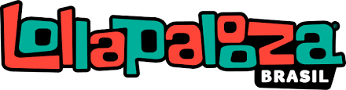

O Rock in Rio é um festival de música idealizado pelo empresário brasileiro Roberto Medina pela primeira vez em 1985, sendo, desde sua criação, reconhecidamente, o maior festival musical do planeta. Foi originalmente organizado no Rio de Janeiro, de onde vem o nome.

Lolapaloza
Lollapalooza é um festival de música alternativa que acontece anualmente, é composto por gêneros como rock alternativo, heavy metal, punk rock, grunge e performances de comédia e danças, além de estandes de artesanato.